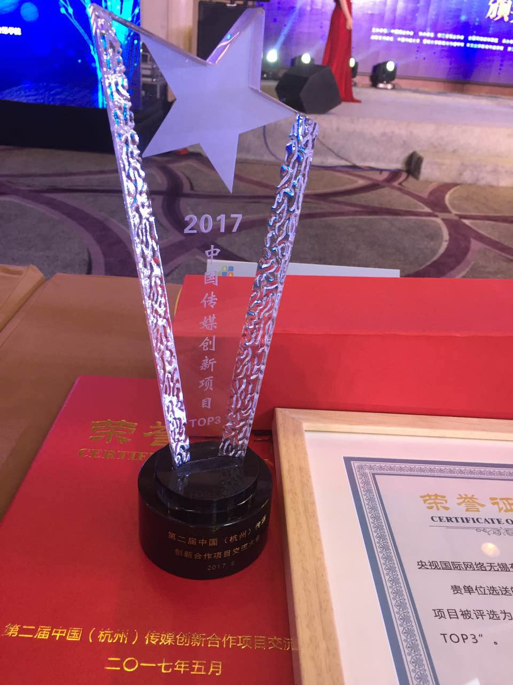
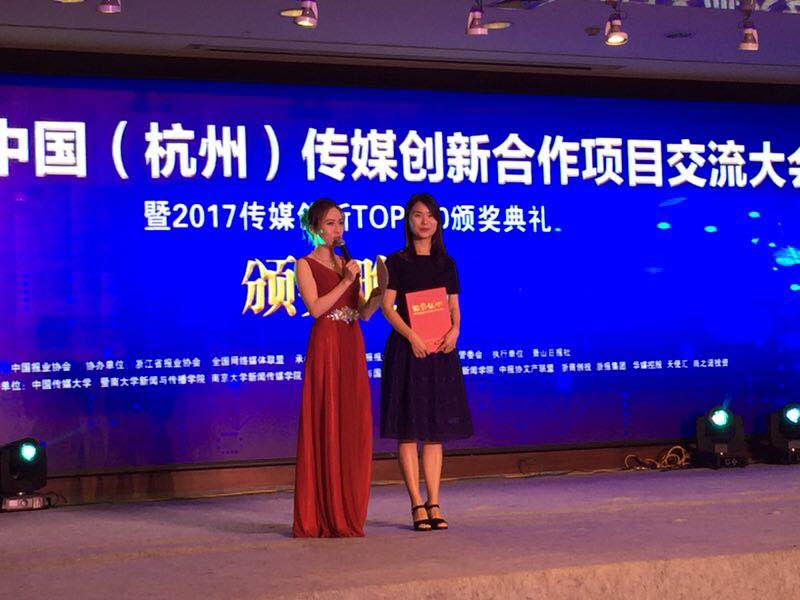
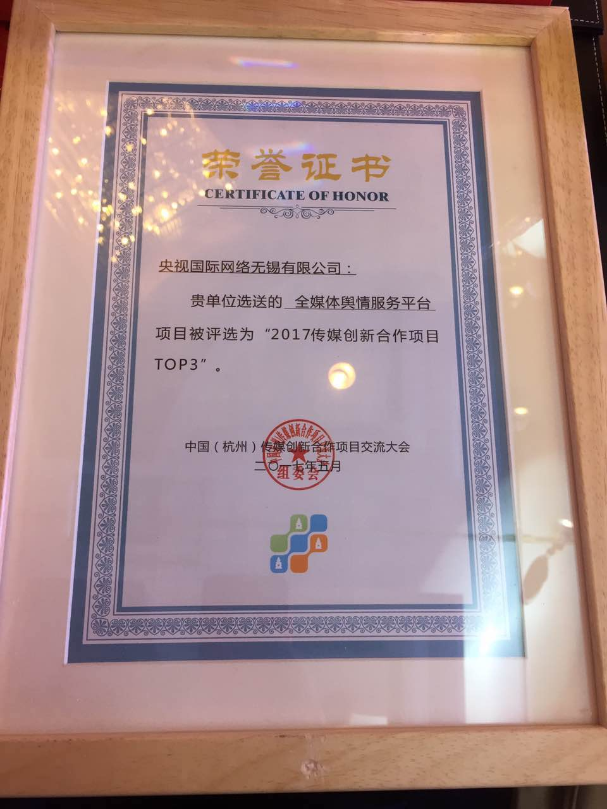
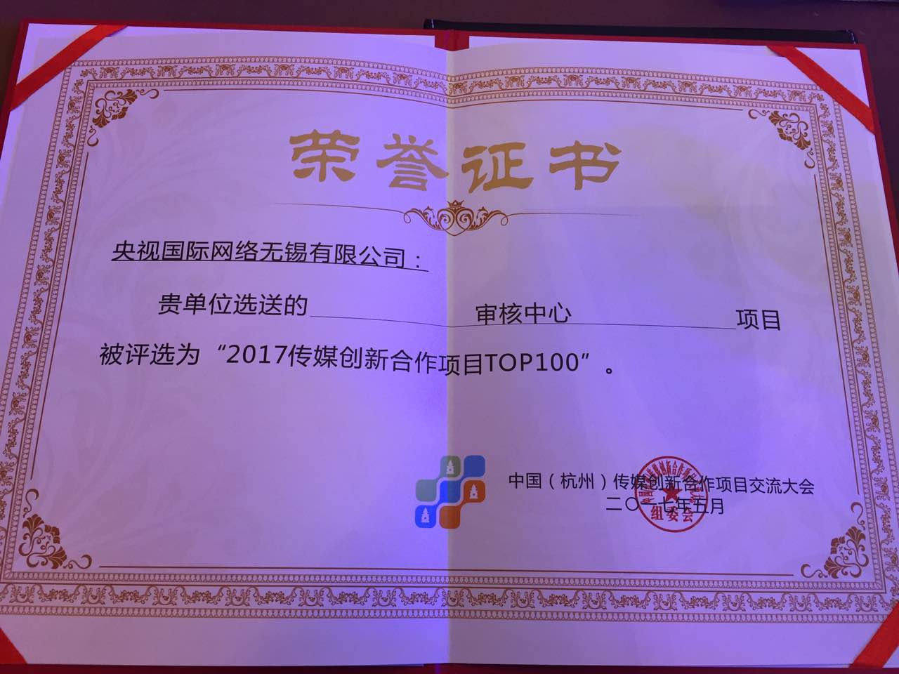
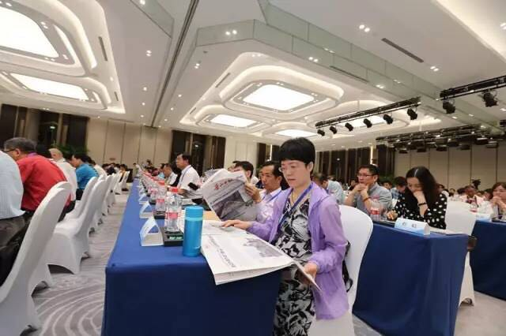
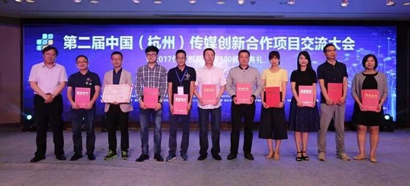

央视国际网络无锡有限公司在第二届中国传媒创新合作大会上荣获两大奖项
2017-05-25
2017年5月24日晚上10点，“第二届中国（杭州）传媒创新合作项目交流大会暨2017 传媒创新TOP100 颁奖典礼”正式落下帷幕。此次大会，被业界人士称为“媒体界的G20”，来自全国各报社（集团）社长、总编辑、分管新媒体的负责人，全国各级电视台负责人，各类网络媒体负责人，其他传媒机构、自媒体、网络技术公司有关负责人等合计300多人参与了此次盛会。
此次大会，一个个新项目、新创意逐一亮相，寻求跨界合作，共谋互利共赢。前期经过专业评审的层层筛选，共有20个创新合作项目进入路演环节。5月23日下午和5月24日上午，经过长达10个小时的传媒创新项目路演、现场答辩和专家评审。央视国际网络无锡有限公司报送的2个项目（“审核中心团队”和“全媒体舆情服务平台” ），不断过关斩将，最终荣获2大奖项。其中“全媒体舆情服务平台”更是从130多个评选项目中脱颖而出，获得本届大会最高奖项（2017传媒创新合作项目TOP3大奖）！
   此次大会，是央视国际网络无锡有限公司“全媒体舆情服务平台”的首次公开亮相，项目一经亮相便以独具特色的舆情产品服务和领先的技术水平备受在座评委及媒体记者的关注。
该平台应用分布式采集等大数据技术实时采集监测互联网数万个媒体平台。目前平台采集覆盖3500万个账号/公众号，每天采集点超过70万个。平台每天采集和分析处理数据超过5000万条。日均数据采集规模位于行业前列。依托央视新媒体庞大资源，项目创新研发“视频舆情”及“境外舆情”等新形态舆情服务。一方面，该项目平台覆盖超过1.3万家全球主流新闻媒体网站，涉及中、英、韩、日、德、法等多种语言，同时可对Facebook、Twitter、YouTube、Instagram、Google+、VK等近数十家主流社交平台进行监测与分析，能提供权威兼具特色的“境外舆情”服务。另一方面借助项目平台强大的视频舆情监测系统，并依托库存200万小时视频媒资数据库，有效实现了视频舆情资料的检索、分析、播放与下载，并可依据客户需求实现海量视频的数据分析，提供更精准的“视频舆情”服务。相比国内众多以图文信息监测为主的舆情服务，项目平台的“视频舆情”与“境外舆情”服务，独树一帜，在舆情大数据领域树立了自身独特的竞争优势和行业地位。 央视国际网络无锡有限公司的“全媒体舆情服务平台”，目前可实现“互联网舆情+视频舆情+境外舆情”等一系列互联网全媒体信息监测和个性化舆情定制，提供专业舆情分析研判意见，有效提供各类分析报告，为各类政企单位提供有效决策支持。同时，该平台还可以为相关企事业机构提供用户画像、品牌分析、口碑分析、趋势分析、行业分析、竞品分析、传播效果分析等大数据增值服务。
此届传媒大会上，央视国际网络无锡有限公司“全媒体舆情服务平台”获得大会最高奖项，“审核中心团队”获得“2017中国传媒创新项目TOP100”奖项，均是社会各界对公司在创新能力方面的高度肯定。相信，在未来的媒体融合发展道路上，央视国际网络无锡有限公司将会为业界带来更多更具创新特色的优质产品和服务，进一步助推我国媒体产业转型升级，逆势而上，实现跨越式发展！